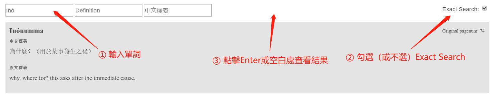

線上字典使用説明
字典詞條 🔗
該欄由電子化虎尾壟語字典的所有詞條以字母表順序排列而成。
每個詞條包括「單詞」、「中文釋義」、「原文釋義」、「原文頁碼*」四部分。詞條示例如下：

* 原文頁碼是指虎尾壟語字典英譯本 的 PDF 頁數 (非印刷於書上之頁碼)
電子檢索 🔗
該欄為虎尾壟語字典提供檢索功能，共有 3 種檢索方式 (依搜尋優先順序排列)：單詞檢索、英文釋義檢索、中文釋義檢索。
搜尋順序
- 若
單詞檢索已輸入文字，則會忽略英文釋義檢索、中文釋義檢索 - 若
英文釋義檢索已輸入文字，則會忽略中文釋義檢索 - 若想使用
中文釋義檢索，則單詞檢索與英文釋義檢索皆不可輸入文字
下方詳述此三種檢索功能
單詞檢索
該功能為對字典中單詞的檢索。使用步驟如下：
① 在 item 框内輸入所需檢索的單詞
② 勾選 Exact Search 以開啓精確檢索功能（區分大小寫與單詞上標），如不勾選則為模糊匹配
③ 點擊鍵盤 Enter 鍵，或單擊頁面任意空白位置即可查看檢索結果

英文釋義檢索
該功能為對字典中單詞的英文釋義的檢索。使用步驟如下：
該功能為對字典中單詞的英文釋義的檢索。使用步驟如下：
① 在 Definition 框内輸入所需檢索的單詞
② 勾選 Exact Search 以開啓精確檢索功能（區分大小寫與單詞上標），，如不勾選則為模糊匹配
③ 點擊鍵盤 Enter 鍵，或單擊頁面任意空白位置即可查看檢索結果

中文釋義檢索
該功能為對字典中單詞的中文釋義的檢索。使用步驟如下：
① 在 中文釋義 框内輸入所需檢索的單詞的中文釋義
② 點擊鍵盤 Enter 鍵，或單擊頁面任意空白位置即可查看檢索結果

下載字典
我們提供多種格式的字典檔供大家下載：